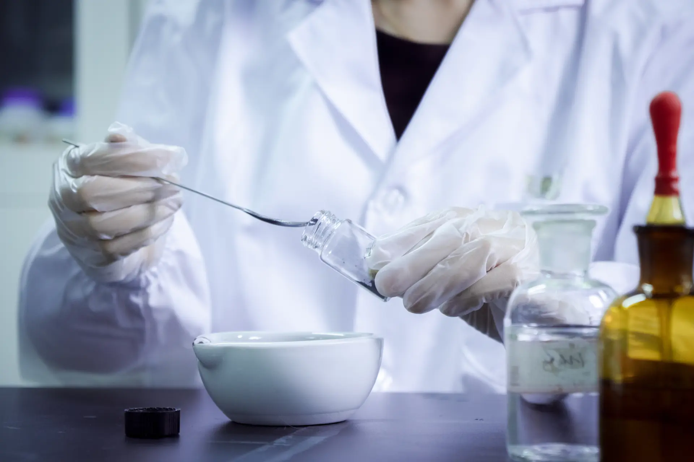
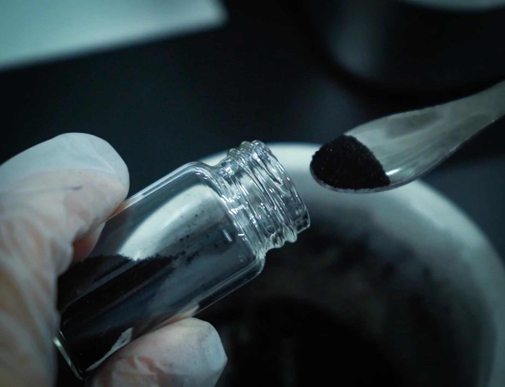

The carbon extraction stage is the first critical gate in memorial diamond manufacturing. Before HPHT synthesis can begin, biological source material must be reduced to high-purity carbon — typically ≥99.95% purity to achieve gem-quality crystal growth. The yield of this process varies significantly depending on the carbon source: human hair, pet fur, and botanical material each present distinct chemical compositions, structural challenges, and extraction efficiency profiles. This article provides a comparative technical analysis of carbon extraction yield across these three primary source categories, with manufacturing implications for production planning, sample sizing, and quality control.
Quick Answer
Human hair provides the most reliable carbon source for memorial diamonds. Pet fur requires slightly more starting material due to higher sulfur content. Botanical sources vary widely depending on tissue type and moisture content. Exact yield percentages depend on sample condition and processing parameters. All sources require purification to ≥99.95% carbon before HPHT synthesis. A 1.0ct memorial diamond requires approximately 6g minimum of human hair, 10–20g recommended, 11–14g of pet fur, or 15–50g of botanical material depending on tissue type.
1. The Carbon Extraction Pipeline: An Overview
Carbon extraction from biological material follows a standardized multi-stage protocol. The process begins with raw material intake and documentation, followed by thermal decomposition (pyrolysis) to break down organic compounds, chemical purification to remove residual minerals and non-carbon elements, and finally graphitization to convert amorphous carbon into crystalline graphite suitable for HPHT synthesis. Each source type introduces specific variables at each stage that affect overall yield.
The theoretical carbon content of a material is not the same as its extractable carbon yield. For example, while human hair is approximately 30-40% carbon by mass, the extraction process does not recover 100% of that carbon. Some carbon is lost as gaseous byproducts during pyrolysis; some remains bound to non-volatile mineral residues; and some is removed during purification stages that strip away contaminants. Understanding these loss mechanisms is essential for accurate production planning and customer sample sizing guidance.
For a detailed breakdown of the carbon purity requirements and quality thresholds at each stage, see our technical guide on carbon purity requirements for memorial diamond synthesis.
2. Human Hair: Composition and Extraction Yield
2.1 Chemical Composition
Human hair is primarily composed of keratin, a fibrous structural protein rich in sulfur-containing amino acids. The typical elemental composition of clean, dry human hair is approximately 30-40% carbon, 5% hydrogen, 15–17% nitrogen, 3–4% sulfur, and 1–2% oxygen, with the remainder consisting of trace minerals and water. The high nitrogen content is a significant factor in extraction efficiency, as nitrogen compounds must be fully volatilized or removed during purification to prevent contamination of the final carbon product.
Hair also contains melanin pigments, which are carbon-rich aromatic polymers. These pigments contribute additional carbon content but can complicate purification because their chemical structure is more thermally stable than keratin, requiring extended pyrolysis times or higher temperatures to fully decompose.
2.2 Extraction Yield Data
Based on production data from BioGem Lab's 1,247 completed batches, the extraction yield from human hair follows a predictable range:
- Raw carbon yield (post-pyrolysis): 18–22% of original sample mass
- Purified carbon yield (post-purification, ≥99.95%): 12–16% of original sample mass
- Graphite conversion efficiency: 95–98% of purified carbon
- Net usable carbon for HPHT synthesis: 11–15% of original sample mass
These figures assume clean, dry, unpigmented hair samples. Dyed or chemically treated hair may yield lower carbon content due to residual synthetic compounds that interfere with purification. Samples contaminated with oils, styling products, or environmental residues also require additional pre-cleaning steps that can reduce net yield by 2–4%.
From a practical manufacturing standpoint, a 5g sample of clean human hair yields approximately 0.55–0.75g of net usable carbon. This is sufficient for a 0.3–0.5ct memorial diamond, depending on the desired cut style and density. For a 1.0ct diamond, approximately 10–12g of hair is required, with a 2.0ct diamond requiring 18–22g.
3. Pet Fur: Keratin Variations and Yield Considerations
3.1 Structural Differences from Human Hair
Pet fur is also keratin-based, but its amino acid profile and physical structure differ meaningfully from human hair. Mammalian fur typically contains a higher proportion of guard hairs (coarse, medullated fibers) and undercoat hairs (fine, dense fibers). The medulla — the central core of coarse hairs — is composed of air-filled cells and contains a different carbon-to-protein ratio than the cortex.
Additionally, pet fur generally has a higher sulfur content (4–6%) and lower cysteine concentration compared to human hair. The cysteine content is particularly important because it determines the degree of disulfide cross-linking in the keratin structure, which affects how readily the protein decomposes during pyrolysis. Fur with lower cysteine cross-linking tends to break down more uniformly but may produce slightly more volatile carbon losses during heating.
3.2 Extraction Yield Data
Production data from pet fur samples (predominantly cat and dog hair) shows the following yield profile:
- Raw carbon yield (post-pyrolysis): 16–20% of original sample mass
- Purified carbon yield (post-purification, ≥99.95%): 11–14% of original sample mass
- Graphite conversion efficiency: 94–97% of purified carbon
- Net usable carbon for HPHT synthesis: 10–13.5% of original sample mass
Pet fur yields are marginally lower than human hair across all stages, with the most significant difference occurring at the purification stage. The higher sulfur content in pet fur produces additional sulfur-containing byproducts during pyrolysis, which must be removed through extended acid washing and thermal desorption. This extra processing step contributes to the 2–5% lower net yield.
Practical sample sizing: 5g of clean pet fur yields approximately 0.50–0.67g of net usable carbon, sufficient for a 0.3–0.5ct diamond. A 1.0ct diamond requires approximately 11–14g of pet fur; a 2.0ct diamond requires 20–26g. The pet memorial diamond market is the fastest-growing segment in B2B memorial diamond supply, and accurate sample sizing guidance is critical for partner customer satisfaction. For partnership inquiries, see our OEM partnership page.

Purified carbon powder following multi-stage thermal and chemical refinement. Batch purity: 99.97%.
4. Botanical Sources: Cellulose, Lignin, and Extraction Complexity
4.1 Chemical Composition Challenges
Botanical sources — flowers, leaves, stems, and other plant material — present the most complex carbon extraction challenge. Unlike keratin-based animal sources, plant material is composed of three primary structural polymers: cellulose (40–50% dry mass), hemicellulose (15–25%), and lignin (15–30%). Cellulose is approximately 44% carbon by mass; hemicellulose is approximately 40%; and lignin is approximately 62–67% carbon.
However, the theoretical carbon content is significantly offset by several factors:
- Inorganic mineral content: Plant ash (silica, calcium, potassium) can comprise 3–15% of dry mass and must be completely removed.
- Moisture retention: Fresh botanical samples contain 60–90% water. Drying is essential but can damage cellular structure, releasing volatile carbon compounds.
- Secondary metabolites: Essential oils, tannins, flavonoids, and pigments can interfere with purification and must be removed through solvent extraction.
- Structural variability: Woody stems (high lignin) yield differently than petals (high cellulose, low lignin).
4.2 Extraction Yield Data
Botanical source yield varies widely depending on the specific plant type and preparation method. Production data from BioGem Lab's botanical carbon batches shows the following ranges:
- Raw carbon yield (post-pyrolysis): 25–35% of dry sample mass
- Purified carbon yield (post-purification, ≥99.95%): 8–14% of original (dry) sample mass
- Graphite conversion efficiency: 92–96% of purified carbon
- Net usable carbon for HPHT synthesis: 7–13% of original (dry) sample mass
The wide range in purified carbon yield reflects the diversity of botanical sources. Flower petals (high cellulose, low lignin, low mineral content) tend toward the upper end of the range (11–13% net yield). Woody stems and dried branches (high lignin, high mineral content) tend toward the lower end (7–9% net yield). Leaves fall in the middle range (9–11%).
Practical sample sizing: A 20g dry sample of clean flower petals yields approximately 2.2–2.6g of net usable carbon, sufficient for a 1.0–1.5ct diamond. For larger diamonds, sample sizes of 30–50g are recommended. For manufacturing capacity planning and current production timelines, see our manufacturing specifications.
5. Comparative Analysis: Yield Summary Table
The following table consolidates extraction yield data across all three source categories, normalized to net usable carbon for HPHT synthesis:
| Source Category | Net Carbon Yield | Sample Needed (0.5ct) | Sample Needed (1.0ct) | Sample Needed (2.0ct) |
|---|---|---|---|---|
| Human Hair (clean, dry) | 11–15% of mass | 5–7g | 10–12g | 18–22g |
| Pet Fur (clean, dry) | 10–13.5% of mass | 5–8g | 11–14g | 20–26g |
| Botanical (flower petals) | 11–13% of dry mass | 8–12g | 15–20g | 28–38g |
| Botanical (woody stems) | 7–9% of dry mass | 12–16g | 20–28g | 38–50g |
Note: All figures represent net usable carbon after full purification to ≥99.95% and graphitization. Actual yield may vary ±10% depending on sample preparation, contamination levels, and specific batch conditions. For a deeper understanding of the quality thresholds and certification standards that govern final diamond quality, refer to our carbon purity requirements guide.
6. Manufacturing Implications
6.1 Production Planning and Batch Allocation
Carbon extraction yield directly impacts batch scheduling and resource allocation. Higher-yield sources (human hair, flower petals) allow for smaller batch sizes and faster turnaround times. Lower-yield sources (pet fur, woody botanicals) require larger batch volumes and may extend the purification timeline by 1–2 days per batch to accommodate additional cleaning stages.
For B2B partners managing customer-facing sample collection, understanding these yield differences is essential for setting accurate customer expectations. A partner brand that accepts pet fur memorials must collect larger sample sizes than one focused on human hair memorials. Similarly, botanical memorial programs require clear communication about minimum sample sizes and the importance of drying samples before submission.
6.2 Quality Control and Contamination Risk
Lower-yield sources carry a higher contamination risk per unit of usable carbon. When a larger mass of raw material must be processed to extract a given quantity of carbon, the probability of introducing trace contaminants increases. Botanical sources are particularly susceptible to soil minerals, pesticide residues, and environmental pollutants that can compromise carbon purity.
BioGem Lab's quality control protocol includes elemental spectroscopy at three checkpoints: post-pyrolysis, post-purification, and pre-graphitization. Any batch that fails to meet the 99.95% purity threshold at the pre-graphitization stage is reprocessed or rejected. This protocol ensures consistent diamond quality regardless of source variability. For more on manufacturing quality standards, see our manufacturing specifications.
6.3 Economic Considerations for B2B Partners
From a cost perspective, the higher material requirements for lower-yield sources translate into increased per-unit processing costs. Botanical memorial diamonds typically require 20–40% more processing time and reagent consumption compared to human hair diamonds of equivalent carat weight. These cost differences are absorbed into the B2B pricing structure but must be transparently communicated to partners during contract negotiation.
For cost benchmarking and retail pricing analysis across different product categories, see our manufacturing vs. retail pricing analysis.
7. Conclusion
Q: How much human hair is needed for a 1-carat memorial diamond?
A: A 1.0ct memorial diamond requires approximately 10–12g of clean, dry human hair. From this, BioGem Lab extracts roughly 1.1–1.8g of crude carbon, which purifies to 0.6–1.0g of ≥99.95% carbon after graphitization. This net yield of 11–15% makes human hair the most predictable carbon source. For a 2.0ct diamond, 18–22g is recommended.
Q: Why does pet fur yield 2–5% less carbon than human hair?
A: Pet fur contains 4–6% sulfur versus 3–4% in human hair, and lower cysteine concentration in its keratin structure. During pyrolysis, this extra sulfur produces additional sulfur-containing byproducts that require extended acid washing and thermal desorption to remove. The extra purification step reduces net usable carbon from 11–15% (hair) to 10–13.5% (fur).
Q: Which botanical source has the highest carbon extraction yield?
A: Flower petals achieve the highest botanical yield at 11–13% net usable carbon, thanks to high cellulose content (~44% carbon by mass) and low lignin/mineral content. Woody stems and branches perform worst at 7–9% due to high lignin cross-linking and elevated silica/calcium ash content. A 20g dry petal sample yields 2.2–2.6g of usable carbon — sufficient for a 1.0–1.5ct diamond.
Carbon extraction yield is not a uniform constant across biological source materials. Human hair offers the highest and most predictable extraction efficiency, making it the baseline reference for production planning. Pet fur yields marginally lower results due to elevated sulfur content and structural differences in keratin composition. Botanical sources present the widest variability, with yield heavily dependent on the specific plant tissue type and preparation quality.
For memorial diamond manufacturers and B2B partners, these yield differences have direct operational implications: sample size guidance, batch scheduling, quality control protocols, and pricing structures must all account for source-specific variability. Accurate yield data enables better customer communication, more reliable production timelines, and consistent product quality across all carbon source categories.
As the memorial diamond industry expands into new markets — pet memorial services, botanical commemorative programs, and cross-cultural memorial practices — understanding the technical fundamentals of carbon extraction yield becomes a competitive differentiator for manufacturers and their partner brands alike.
Need Carbon Extraction for Your Memorial Diamond Program?
BioGem Lab provides white-label carbon extraction and HPHT diamond synthesis for B2B partners worldwide. Patent-backed technology, full traceability, and consistent yield across all biological source types.
Get a quote in 24h. 60-day production guaranteed. partners@biogemlab.com
How much carbon can be extracted from 5g of human hair?
From 5g of clean, dry human hair, approximately 1.0–1.2g of crude carbon can be extracted through thermal decomposition. After purification to the 99.95%+ threshold required for HPHT synthesis, net usable carbon is approximately 0.6–0.8g. This is sufficient for a 0.3–0.5ct memorial diamond, depending on cut and density.
Does pet fur produce different carbon yield than human hair?
Pet fur and human hair are both keratin-based proteins, but their amino acid profiles differ. Pet fur typically contains slightly higher sulfur content and lower cysteine concentration, which can result in marginally lower extraction efficiency (approximately 2–5% less net carbon yield). However, the difference is operationally negligible in a production setting with proper sample preparation.
Why do botanical sources require larger sample sizes?
Botanical sources contain non-carbon structural components (cellulose, hemicellulose, lignin) that must be decomposed and filtered. While cellulose itself is ~44% carbon by mass, the extraction process from plant material requires additional chemical stages to remove silica, minerals, and other inorganic compounds. This results in lower overall carbon recovery efficiency, necessitating larger initial samples (typically 20–30g) for equivalent diamond output.
Can dyed or chemically treated hair be used for carbon extraction?
Dyed or chemically treated hair can be used, but the extraction yield may be reduced by 2–4% due to residual synthetic compounds that interfere with purification. The carbon extraction process includes a pre-cleaning stage that removes most surface contaminants, but deeply embedded chemical residues may require extended processing. Clean, untreated hair always yields the highest and most consistent results.
What is the minimum sample size for a 1.0ct memorial diamond?
For a 1.0ct memorial diamond, the minimum sample size varies by source: human hair requires 10–12g; pet fur requires 11–14g; botanical flower petals require 15–20g; and woody botanical material requires 20–28g. These figures assume clean, dry, uncontaminated samples. BioGem Lab recommends collecting samples at the upper end of the range to account for processing variability and ensure sufficient material for quality control sampling.
About the author: BioGem Lab is a B2B memorial diamond manufacturer specializing in HPHT diamond synthesis from biological carbon sources. The laboratory holds CNIPA ZL 201010565778.9 for bio-carbon extraction technology and operates a 7-stage manufacturing pipeline with full chain-of-custody documentation. For technical inquiries or partnership discussions, contact the laboratory.
FAQ: Carbon Extraction Yield
Li Lihua — Chief Scientist
Patent inventor ZL 201010565778.9. View profile →
Ready to Partner with BioGem Lab?
Learn about our white-label and OEM manufacturing programs for memorial diamond businesses.
Explore Partnership →